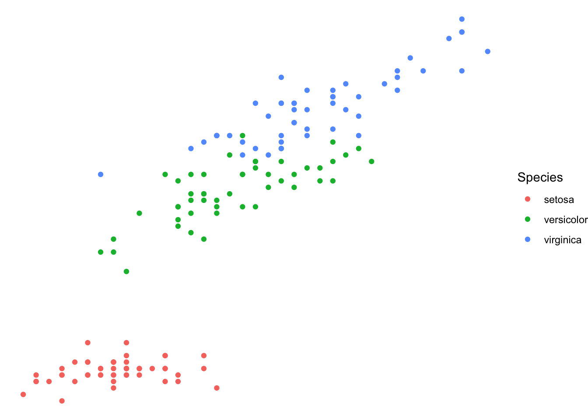
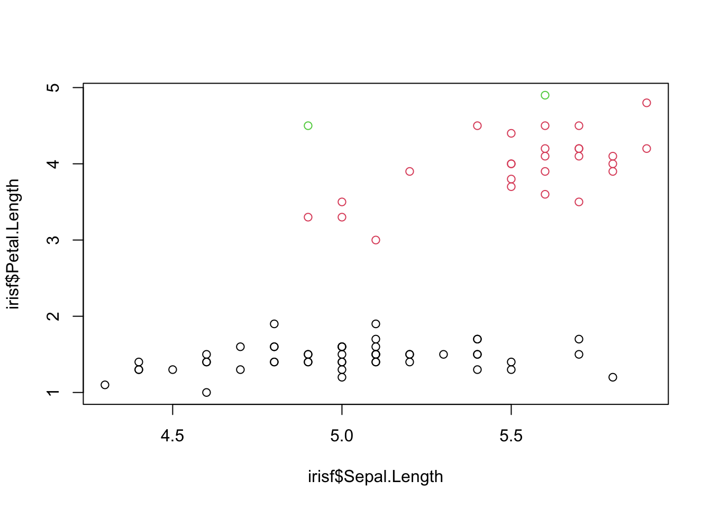

13 Suplementos
13.1 Base R vs. Tidyverse
A linguagem R completou 20 anos de idade neste mês de março de 2020, e a cada dia se torna mais popular. Pesquisa recente publicada no mês de março feita pelo TIOBE Programming Community Index, um site que agrega indicadores sobre a popularidade de linguagens de programação, posiciona a linguagem como a 11º entre as mais populares no mundo A TIOBE agrega dados do Google, Yahoo, Bing, Wikipedia, Youtube, Badu, e Amazon, para gerar estes resultados, que são apresentados mensalmente.
Parte dessa popularidade é relativamente recente, podendo ser verificada a partir do ano de 2014. Coincidência ou não, 2014 é o ano de surgimento do pacote dplyr, o primeiro de uma série de pacotes que coletivamente vieram a se tornar conhecidos como Tidyverse.

Porcentagem de visitas às questões pertinentes a algumas linguagens de programação na plataforma Stack Overflow. Dados obtidos apenas de países desenvolvidos segundo o Banco Mundial. Nota-se o aumento quase linear referente à linguagem R a partir do ano 2014. Figura extraída desta postagem: https://stackoverflow.blog/2017/10/10/impressive-growth-r/
13.1.1 O que é o Tidyverse?5
O Tidyverse é um conjunto de pacotes de R desenvolvidos para a ciência de dados. Todos os pacotes compartilham uma mesma filosofia e gramática da linguagem. Por exemplo, a estrutura das funções é sempre a mesma:
o primeiro argumento sempre é
data, isto é, você deve sempre apresentar os dados neste local. Já que o universo destes pacotes é focado em dados na forma de uma tabela, aqui sempre deve ser fornecido umdata.frame;Argumentos posteriores modificam o
data.frame- por exemplo, na função
select()do pacotedplyr, você deve fornecer os nomes das colunas que deseja selecionar no seu conjunto de dados; - na função
separate_rowsdo pacotetidyr, você deve fornecer os nomes das colunas que se deseja separar em uma ou mais colunas além de indicar o separador (por exemplo, você pode ter uma coluna que possui os nomesSapotaceae;Burseraceaee deseja separar isso em duas colunas; você deve indicar que o separador é;).
- por exemplo, na função
A função sempre deve retornar um
data.frame(existem algumas exceções feitas às funções de alguns pacotes voltados exclusivamente para lidar com vetores, como por exemplo o pacotepurrr; porém o uso dessas funções é geralmente utilizado dentro de colunas do seudata.frame)
Pretendemos aqui apresentar apenas funcionalidades básicas de dois dos pacotes deste universo, e mostrar como se tornam poderosas quando integrados ao mesmo fluxo de trabalho.
13.1.1.1 dplyr e ggplot2, símbolos do Tidyverse
Talvez os pacotes mais conhecidos deste universo sejam o dplyr e o ggplot2.
Enquanto o primeiro é especializado na manipulação de dados, o segundo é voltado para a produção de plots.
O dplyr surgiu com o objetivo de fornecer um conjunto de ferramentas (suas funções!) para uma manipulação eficiente de conjuntos de dados sob a forma de data.frames, e rapidamente, ganhou muitos adeptos devido à facilidade de uso de suas funções dentro de uma nova gramática para a manipulação de dados (palavras do criador do pacote, Hadley Wickham, em sua postagem de introdução do pacote).
Essa nova gramática incluiu tanto o uso de funções com nomes de verbos (em inglês, vale ressaltar) desenhados para executar muito bem apenas uma ação (Tabela 13.1), quanto o uso do que se convencionou chamar de pipe, criado para encadear ações da esquerda para a direita, resultando em menos objetos intermediários estocados na área de trabalho e facilitando a leitura do código.
Com o uso de verbos como nome de funções e uma sintaxe diferente da tradicionalmente utilizada em R, o pacote ganhou muitos adeptos deste sua disponibilização no CRAN em janeiro de 2012.
Seguindo o mesmo caminho, o pacote ggplot2 (Tabela 13.2), também do mesmo autor do pacote dplyr, porém já de muito mais idade (foi lançado oficialmente em 10 de junho de 2007) se tornou uma referência na produção de gráficos utilizando a linguagem R, ao propor a construção de gráficos por camadas, similar ao utilizado em programas de SIG.
Dentro desta nova sintaxe em R, o operador + ganhou uma nova função.
Nas próximas seções, vamos ver alguns exemplos práticos utilizando esses dois pacotes.
13.1.2 Usando o dplyr
Vamos utilizar o famoso conjunto iris6 para aprender a manipular os dados com as ferramentas do dplyr.
Vamos aprender brevemente como funcionam as principais funções deste pacote (Tabela 13.1). Primeiro vamos carregar o pacote para a sessão de trabalho:
| Função | O que faz |
|---|---|
| select() | seleciona colunas dos dados |
| filter() | filtra linhas específicas dos dados |
| arrange() |
ordena as linhas do data.frame
|
| mutate() |
cria novas colunas no data.frame
|
| summarise() | sumariza os dados de acordo com grupos |
| group_by() | agrupa os dados segundo grupos |
13.1.2.1 Selecionando colunas com select()
Agora, vamos utilizar a função select() para selecionar colunas. Ela funciona da seguinte maneira:
primeiro, utiliza-se como primeiro argumento o nome do
data.frameque se deseja trabalhar; em nosso caso, odata.framese chamairis:select(iris, ...);depois, colocamos no lugar de
...o nome das colunas que desejamos selecionar, sem aspas. Por exemplo, se quisermos selecionar a coluna das espécie, fazemos assim:
| Species |
|---|
| setosa |
| setosa |
| setosa |
| setosa |
| setosa |
| setosa |
| setosa |
| setosa |
| setosa |
| setosa |
Ou se quisermos a coluna de comprimento de pétala mais a coluna das espécies:
| Petal.Length | Species |
|---|---|
| 1.4 | setosa |
| 1.4 | setosa |
| 1.3 | setosa |
| 1.5 | setosa |
| 1.4 | setosa |
| 1.7 | setosa |
| 1.4 | setosa |
| 1.5 | setosa |
| 1.4 | setosa |
| 1.5 | setosa |
Também podemos utilizar funções auxiliares para executar buscas nos nomes das colunas segundo determinados padrões.
Entre essas funções auxiliares, destacamos a função contains().
Por exemplo, se quisermos selecionar todas as variáveis que contêm “Petal” em seus nomes:
| Petal.Length | Petal.Width |
|---|---|
| 1.4 | 0.2 |
| 1.4 | 0.2 |
| 1.3 | 0.2 |
| 1.5 | 0.2 |
| 1.4 | 0.2 |
| 1.7 | 0.4 |
| 1.4 | 0.3 |
| 1.5 | 0.2 |
| 1.4 | 0.2 |
| 1.5 | 0.1 |
13.1.2.2 Filtrando dados com filter()
Se desejamos filtrar os dados segundo alguma informação, devemos utilizar a função filter().
Por exemplo, se quiser checar os dados de pétalas apenas para a espécie setosa, fazemos assim:
| Sepal.Length | Sepal.Width | Petal.Length | Petal.Width | Species |
|---|---|---|---|---|
| 5.1 | 3.5 | 1.4 | 0.2 | setosa |
| 4.9 | 3.0 | 1.4 | 0.2 | setosa |
| 4.7 | 3.2 | 1.3 | 0.2 | setosa |
| 4.6 | 3.1 | 1.5 | 0.2 | setosa |
| 5.0 | 3.6 | 1.4 | 0.2 | setosa |
| 5.4 | 3.9 | 1.7 | 0.4 | setosa |
| 4.6 | 3.4 | 1.4 | 0.3 | setosa |
| 5.0 | 3.4 | 1.5 | 0.2 | setosa |
| 4.4 | 2.9 | 1.4 | 0.2 | setosa |
| 4.9 | 3.1 | 1.5 | 0.1 | setosa |
Ou então quais amostras da espécie virginica possuem comprimento de sépala maior que 7 cm:
| Sepal.Length | Sepal.Width | Petal.Length | Petal.Width | Species |
|---|---|---|---|---|
| 7.1 | 3.0 | 5.9 | 2.1 | virginica |
| 7.6 | 3.0 | 6.6 | 2.1 | virginica |
| 7.3 | 2.9 | 6.3 | 1.8 | virginica |
| 7.2 | 3.6 | 6.1 | 2.5 | virginica |
| 7.7 | 3.8 | 6.7 | 2.2 | virginica |
| 7.7 | 2.6 | 6.9 | 2.3 | virginica |
| 7.7 | 2.8 | 6.7 | 2.0 | virginica |
| 7.2 | 3.2 | 6.0 | 1.8 | virginica |
| 7.2 | 3.0 | 5.8 | 1.6 | virginica |
| 7.4 | 2.8 | 6.1 | 1.9 | virginica |
E se quisermos adicionar uma coluna em iris que consiste na razão entre o comprimento da pétala pelo comprimento da sépala? Chamaremos nossa nova coluna de razaopetsep:
| Sepal.Length | Sepal.Width | Petal.Length | Petal.Width | Species | razaopetsep |
|---|---|---|---|---|---|
| 5.1 | 3.5 | 1.4 | 0.2 | setosa | 0.2745098 |
| 4.9 | 3.0 | 1.4 | 0.2 | setosa | 0.2857143 |
| 4.7 | 3.2 | 1.3 | 0.2 | setosa | 0.2765957 |
| 4.6 | 3.1 | 1.5 | 0.2 | setosa | 0.3260870 |
| 5.0 | 3.6 | 1.4 | 0.2 | setosa | 0.2800000 |
| 5.4 | 3.9 | 1.7 | 0.4 | setosa | 0.3148148 |
| 4.6 | 3.4 | 1.4 | 0.3 | setosa | 0.3043478 |
| 5.0 | 3.4 | 1.5 | 0.2 | setosa | 0.3000000 |
| 4.4 | 2.9 | 1.4 | 0.2 | setosa | 0.3181818 |
| 4.9 | 3.1 | 1.5 | 0.1 | setosa | 0.3061224 |
13.1.2.3 Destrinchando as funções group_by e summarise
As funções group_by e summarise resumem o propósito do pacote dplyr, pois permitem em poucas linhas de comando sumariar os dados, e partem do princípio, muito presente no R através das funções da família apply, chamado split-apply-combine que, em tradução livre, pode ser entendido como uma sequência lógica de ação: quebre em grupos, aplique uma função, e combine os resultados.
Vamos partir para o uso dessas funções agrupando os dados em função da coluna Species e calculando a média do comprimento das pétalas (variável Petal.Length):
iris_grouped <- group_by(iris, Species)
iris_sumario <- summarise(iris_grouped, petala_l_media = mean(Petal.Length, na.rm = TRUE))
iris_sumario| Species | petala_l_media |
|---|---|
| setosa | 1.462 |
| versicolor | 4.260 |
| virginica | 5.552 |
Vamos destrinchar o que fizemos acima.
A função group_by os dados em função de alguma ou algumas variáveis.
Essa função geralmente é utilizada em conjunto com a função summarise para gerar sumários estatísticos de uma ou mais variáveis.
## [90m# A tibble: 10 x 5[39m
## [90m# Groups: Species [1][39m
## Sepal.Length Sepal.Width Petal.Length Petal.Width Species
## [3m[90m<dbl>[39m[23m [3m[90m<dbl>[39m[23m [3m[90m<dbl>[39m[23m [3m[90m<dbl>[39m[23m [3m[90m<fct>[39m[23m
## [90m 1[39m 5.1 3.5 1.4 0.2 setosa
## [90m 2[39m 4.9 3 1.4 0.2 setosa
## [90m 3[39m 4.7 3.2 1.3 0.2 setosa
## [90m 4[39m 4.6 3.1 1.5 0.2 setosa
## [90m 5[39m 5 3.6 1.4 0.2 setosa
## [90m 6[39m 5.4 3.9 1.7 0.4 setosa
## [90m 7[39m 4.6 3.4 1.4 0.3 setosa
## [90m 8[39m 5 3.4 1.5 0.2 setosa
## [90m 9[39m 4.4 2.9 1.4 0.2 setosa
## [90m10[39m 4.9 3.1 1.5 0.1 setosaVejam que, acima das linhas do conjunto de dados, há a seguinte sentença:
## # Groups: Species [1]Ela informa que o objeto gerado a partir de group_by está agrupado ao redor da variável Species.
Pensando no pacote base, é como pensar que a variável Species é o argumento INDEX da função tapply(): todos os cálculos a partir desse objeto ocorrerão em função dessa variável.
Após agrupar os dados, nós colocamos esse data.frame agrupado via group_by(), iris_grouped <- group_by(iris, Species), como primeiro argumento da função summarise() para então calcular a média do comprimento de pétala:
iris_grouped <- group_by(iris, Species)
summarise(iris_grouped, petala_l_media = mean(Petal.Length, na.rm = TRUE))| Species | petala_l_media |
|---|---|
| setosa | 1.462 |
| versicolor | 4.260 |
| virginica | 5.552 |
A partir desse mesmo data.frame agrupado, iris_grouped, podemos responder várias outras perguntas:
Quantas amostras por espécies existem nesse conjunto de dados?
Utilizaremos a função n(), que pertence ao mesmo pacote dplyr, para contar o número de grupos. Vejamos:
| Species | n() |
|---|---|
| setosa | 50 |
| versicolor | 50 |
| virginica | 50 |
Médias de comprimento de sépalas e pétalas
| Species | sepala_l_media |
|---|---|
| setosa | 5.006 |
| versicolor | 5.936 |
| virginica | 6.588 |
| Species | petala_l_media |
|---|---|
| setosa | 1.462 |
| versicolor | 4.260 |
| virginica | 5.552 |
Todas as operações anteriores na mesma linha de comando:
iris_sumario <- summarise(iris_grouped, N = n(), sepala_l_media = mean(Sepal.Length, na.rm = TRUE), petala_l_media = mean(Petal.Length, na.rm = TRUE))
head(iris_sumario, 10)| Species | N | sepala_l_media | petala_l_media |
|---|---|---|---|
| setosa | 50 | 5.006 | 1.462 |
| versicolor | 50 | 5.936 | 4.260 |
| virginica | 50 | 6.588 | 5.552 |
13.1.3 O operador %>% e o encadeamento de ações
Notem que nada do que vimos até aqui parece ser muito relevante se comparamos com o que pode ser feito com o pacote base do R. Vejamos:
# Queremos selecionar colunas? Operadores `$` e `[[` dao conta
head(
iris[, which(names(iris) == "Species")],
10)## [1] setosa setosa setosa setosa setosa setosa setosa setosa setosa setosa
## Levels: setosa versicolor virginica## [1] 5.1 4.9 4.7 4.6 5.0 5.4 4.6 5.0 4.4 4.9# Filtrar linhas? Vetores lógicos em conjunto com o operador `[[` em um data.frame resolvem o problema
head(
iris[iris$Species == "virginica" & iris$Sepal.Length > 7,],
10)| Sepal.Length | Sepal.Width | Petal.Length | Petal.Width | Species | |
|---|---|---|---|---|---|
| 103 | 7.1 | 3.0 | 5.9 | 2.1 | virginica |
| 106 | 7.6 | 3.0 | 6.6 | 2.1 | virginica |
| 108 | 7.3 | 2.9 | 6.3 | 1.8 | virginica |
| 110 | 7.2 | 3.6 | 6.1 | 2.5 | virginica |
| 118 | 7.7 | 3.8 | 6.7 | 2.2 | virginica |
| 119 | 7.7 | 2.6 | 6.9 | 2.3 | virginica |
| 123 | 7.7 | 2.8 | 6.7 | 2.0 | virginica |
| 126 | 7.2 | 3.2 | 6.0 | 1.8 | virginica |
| 130 | 7.2 | 3.0 | 5.8 | 1.6 | virginica |
| 131 | 7.4 | 2.8 | 6.1 | 1.9 | virginica |
# Ou podemos filtrar também usando a função `subset`:
head(
subset(iris, Species == "virginica" & iris$Sepal.Length > 7),
10)| Sepal.Length | Sepal.Width | Petal.Length | Petal.Width | Species | |
|---|---|---|---|---|---|
| 103 | 7.1 | 3.0 | 5.9 | 2.1 | virginica |
| 106 | 7.6 | 3.0 | 6.6 | 2.1 | virginica |
| 108 | 7.3 | 2.9 | 6.3 | 1.8 | virginica |
| 110 | 7.2 | 3.6 | 6.1 | 2.5 | virginica |
| 118 | 7.7 | 3.8 | 6.7 | 2.2 | virginica |
| 119 | 7.7 | 2.6 | 6.9 | 2.3 | virginica |
| 123 | 7.7 | 2.8 | 6.7 | 2.0 | virginica |
| 126 | 7.2 | 3.2 | 6.0 | 1.8 | virginica |
| 130 | 7.2 | 3.0 | 5.8 | 1.6 | virginica |
| 131 | 7.4 | 2.8 | 6.1 | 1.9 | virginica |
# Criar novas colunas? Podemos atribuir novas colunas a qualquer data.frame existente usando o operador `$` para criar uma nova coluna qualquer
iris_novo <- iris
iris_novo$razaopetsep <- iris_novo$Petal.Length/iris_novo$Sepal.Length
head(
iris_novo,
10)| Sepal.Length | Sepal.Width | Petal.Length | Petal.Width | Species | razaopetsep |
|---|---|---|---|---|---|
| 5.1 | 3.5 | 1.4 | 0.2 | setosa | 0.2745098 |
| 4.9 | 3.0 | 1.4 | 0.2 | setosa | 0.2857143 |
| 4.7 | 3.2 | 1.3 | 0.2 | setosa | 0.2765957 |
| 4.6 | 3.1 | 1.5 | 0.2 | setosa | 0.3260870 |
| 5.0 | 3.6 | 1.4 | 0.2 | setosa | 0.2800000 |
| 5.4 | 3.9 | 1.7 | 0.4 | setosa | 0.3148148 |
| 4.6 | 3.4 | 1.4 | 0.3 | setosa | 0.3043478 |
| 5.0 | 3.4 | 1.5 | 0.2 | setosa | 0.3000000 |
| 4.4 | 2.9 | 1.4 | 0.2 | setosa | 0.3181818 |
| 4.9 | 3.1 | 1.5 | 0.1 | setosa | 0.3061224 |
# Sumariar resultados - Aqui temos um pouco mais de trabalho, porem nada muito complexo
iris_count <- as.data.frame(table(iris$Species))
names(iris_count) <- c("Species", "N")
iris_sumario2 <- cbind(iris_count, sepala_c_media = tapply(iris$Sepal.Length, iris$Species, "mean"), sepala_l_media = tapply(iris$Sepal.Width, iris$Species, "mean"), petala_c_media = tapply(iris$Petal.Length, iris$Species, "mean"), petala_l_media = tapply(iris$Petal.Width,iris$Species, "mean"))
head(
iris_sumario2,
10) # comparem o resultado do objeto `iris_sumario2` com os de `iris_sumario` criado com as funcoes do pacote `dplyr`| Species | N | sepala_c_media | sepala_l_media | petala_c_media | petala_l_media | |
|---|---|---|---|---|---|---|
| setosa | setosa | 50 | 5.006 | 3.428 | 1.462 | 0.246 |
| versicolor | versicolor | 50 | 5.936 | 2.770 | 4.260 | 1.326 |
| virginica | virginica | 50 | 6.588 | 2.974 | 5.552 | 2.026 |
O operador %>% foi introduzido no R por meio do pacote magrittr, de autoria de Stefan Milton Bache, com o intuito de encadear ações na manipulação de data.frames e facilitar a leitura do código.
Segundo palavras do próprio autor, o operador %>% modifica semanticamente o código em R e o torna mais intuitivo tanto na escrita quanto na leitura.
Será? Vamos tentar entender isso na prática.
Vamos retomar os exemplos acima com a introdução do operador %>% e usá-lo para efetuar dois conjuntos de comandos, expostos abaixo:
13.1.3.1 Conjunto de comandos 1
# Chamar o data.frame `iris`, então...
# Selecionar as colunas `Species`, `Petal.Length`, e `Sepal.Length`, então ...
# Agrupar os dados em função de `Species`, então ...
# Sumariar os dados para obter o número de observações por grupo, nomeando esta variável como `N`; obter o comprimento médio de pétalas, nomeando esta variável como `petala_l_media`, e o comprimento médio de sépalas, nomeando esta variável como `sepala_l_media`, então ...
# Atribui o resultado dessa operação a um objeto chamado `res1`13.1.3.2 Conjunto de comandos 2
# Chamar o data.frame `iris`, então...
# Selecionar as colunas `Species`, `Petal.Length`, e `Sepal.Length`, então ...
# Filtrar os dados para conter apenas a espécie `virginica` e espécimes com comprimento de sépala maior que 7 cm, então ...
# Criar uma nova coluna chamada `razaopetsep` que contenha a razão entre os comprimentos de pétala e sépala, então ...
# Sumariar os dados para obter o número total de observações, nomeando esta variável como `N`; obter o comprimento médio de pétalas, nomeando esta variável como `petala_l_media`, o comprimento médio de sépalas, nomeando esta variável como `sepala_l_media`, e a média do índice da razão entre o comprimento de pétalas e o comprimento de sépalas, nomeando-a como `media_razaopetsep`, então ...
# Atribui o resultado dessa operação a um objeto chamado `res2`Primeiramente, carreguemos o pacote magrittr:
Executando o conjunto de comandos 1, temos:
# Chamar o data.frame `iris`, então...
res1 <-
iris %>%
# Selecionar as colunas `Species`, `Petal.Length`, e `Sepal.Length`, então ...
select(Species, Petal.Length, Sepal.Length) %>%
# Agrupar os dados em função de `Species`, então ...
group_by(Species) %>%
# Sumariar os dados para obter o número de observações por grupo, nomeando esta variável como `N`; obter o comprimento médio de pétalas, nomeando esta variável como `petala_l_media`, e o comprimento médio de sépalas, nomeando esta variável como `sepala_l_media`
summarise(
N = n(),
petala_l_media = mean(Petal.Length, na.rm = TRUE),
sepala_l_media = mean(Sepal.Length, na.rm = TRUE)
)
res1| Species | N | petala_l_media | sepala_l_media |
|---|---|---|---|
| setosa | 50 | 1.462 | 5.006 |
| versicolor | 50 | 4.260 | 5.936 |
| virginica | 50 | 5.552 | 6.588 |
Fazendo o mesmo com o conjunto de comandos 2, temos:
# Chamar o data.frame `iris`, então...
res2 <-
iris %>%
# Selecionar as colunas `Species`, `Petal.Length`, e `Sepal.Length`, então ...
select(Species, Petal.Length, Sepal.Length) %>%
# Filtrar os dados para conter apenas a espécie `virginica` e espécimes com comprimento de sépala maior que 7 cm, então ...
filter(Species == "virginica" & Sepal.Length > 7) %>%
# Criar uma nova coluna chamada `razaopetsep` que contenha a razão entre os comprimentos de pétala e sépala, então ...
mutate(
razaopetsep = Petal.Length/Sepal.Length
) %>%
# Sumariar os dados para obter o número total de observações, nomeando esta variável como `N`; obter o comprimento médio de pétalas, nomeando esta variável como `petala_l_media`, o comprimento médio de sépalas, nomeando esta variável como `sepala_l_media`, e a média do índice da razão entre o comprimento de pétalas e o comprimento de sépalas, nomeando-a como `media_razaopetsep`
summarise(
N = n(),
petala_l_media = mean(Petal.Length, na.rm = TRUE),
sepala_l_media = mean(Sepal.Length, na.rm = TRUE)
)
res2| N | petala_l_media | sepala_l_media |
|---|---|---|
| 12 | 6.3 | 7.475 |
Notem que o código fica formatado da maneira que funciona nosso pensamento sobre as ações a serem executadas: pegamos os dados, efetuamos transformações, e agregamos os resultados, praticamente da mesma maneira que o código é executado.
Como diz o autor na vinheta de introdução ao operador %>%, é como uma receita, fácil de ler, fácil de seguir (It’s like a recipe – easy to read, easy to follow!).
Em conformidade com este entendimento, sugere-se que leiamos o operador %>% como ENTÃO, implicando em uma passagem do resultado da ação à esquerda para a função à direita.
Por isso, eu fiz questão de incluir em ambos os conjuntos de comandos, 1 e 2, a palavra então... ao fim de cada sentença.
Um ponto importante que deve ser levado em consideração é que o uso do operador %>% permite que escondamos o data.frame de entrada nas funções.
Vejamos na prática para entender.
Suponha que nós queiramos selecionar apenas as colunas Species e Petal.Length de iris. Podemos executar isso de duas maneiras, todas com o mesmo resultado:
# podemos representar iris de três maneiras utilizando o operador `%>%`
iris %>% select(Species, Petal.Length) # como temos feito ate aqui
iris %>% select(., Species, Petal.Length) # explicitamos que `iris` esta dentro de select por meio do `.`Isso pode ficar mais fácil de entender com outro exemplo. Suponha que tenhamos o vetor meuvetor <- c(1:20) e queiramos obter o somatório deste vetor. Podemos executar isso de três maneiras utilizando o operador %>%:
meuvetor <- c(1:20)
meuvetor %>% sum(.) # representando o vetor na forma de um `.`
meuvetor %>% sum() # deixando a funcao vazia
meuvetor %>% sum # sem parenteses e sem o `.`. O que?????Todas as maneiras acima executam e geram o mesmo resultado, 210. Essa multiplicidade de maneiras de expor o data.frame (ou o vetor no exemplo acima) é alvo de críticas por parte de alguns estudiosos, devido ao pacote magrittr não exigir que o argumento seja explícito quando usamos o operador %>% (vejam uma boa argumentação nesta postagem de John Mount).
Vale ressaltar que poderíamos muito bem encadear todas as ações executadas acima sem o operador %>%, porém perderíamos a chance de ler o código da esquerda para a direita, oportunidade ofertada pelo uso do operador. Vejamos, usando o conjunto de comandos 2:
summarise(
mutate(
filter(
select(iris, Species, Petal.Length, Sepal.Length),
Species == "virginica" & Sepal.Length > 7),
razaopetsep = Petal.Length/Sepal.Length
),
N = n(),
petala_l_media = mean(Petal.Length, na.rm = TRUE),
sepala_l_media = mean(Sepal.Length, na.rm = TRUE)
)Reparem que o código fica mais difícil de ser lido, pois temos de identificar primeiro quem é o data.frame que serve de entrada para a função summarise.
Depois, há outros desafios, como entender o que cada função faz, e em qual ordem.
Por fim, o código é lido de dentro para fora, um sentido nada intuitivo.
Foi pensando em tornar a leitura do código mais fácil que o autor decidiu criar este operador na linguagem R, uma vez que essa lógica já é extensivamente utilizada em algumas outras linguagens de programação, como F# (representada como |> e o bash (e similares) (representada como |).
13.1.3.3 Resumo do operador %>%:
transforma a leitura do código da esquerda para a direita;
evita a criação de muitos objetos intermediários na sessão de trabalho;
facilita a leitura do código, pois transforma a própria escrita em uma receita.
13.1.4 Usando o ggplot2
O pacote ggplot2 funciona de maneira diferente da função plot() do pacote base do R, pois trabalha em camadas.
Similarmente ao pacote dplyr, começamos com o data.frame que desejamos plotar, contudo, passos posteriores são bem diferentes, e se assemelham mais ao uso do operador %>% do pacote magrittr.
No ggplot2, utilizamos o operador + para adicionar as camadas.
| Função | O que faz |
|---|---|
| ggplot() | Recebe os dados a serem plotados |
| geom_point() | Plota um gráfico de barra |
| geom_boxplot() | Plota um diagrama de caixa |
| aes() | Estética do gráfico |
| xlab() | Modifica o texto do eixo X |
| ylab() | Modifica o texto do eixo Y |
| ggtitle() | Adiciona o título do gráfico |
| facet_wrap() | Divide os gráficos segundo categoria especificada |
As principais funções do pacote estão exemplificadas na tabela 13.2.
A função básica do pacote é ggplot(): nela, informamos nosso conjunto de dados no primeiro argumento.
Após o primeiro passo, fazemos uso de funções para plotar dados em forma de um espalhamento (scatterplots usando a função geom_point()), gráficos de barra (geom_bar), diagramas de caixa (geom_boxplot()), entre outras.
Vejamos na prática como funciona:
# um grafico de espalhamento da variavel Sepal.Length no eixo X e Petal.Length no eixo Y utilizando o conjunto de dados iris
ggplot(iris) + geom_point(aes(x = Sepal.Length, y = Petal.Length))
Dentro das funções que plotam os dados efetivamente (e.g., geom_point(), geom_boxplot()), devemos sempre usar a função aes(): nela inserimos os eixos x e y, informando sempre o nome das colunas sem aspas.
Se quisermos colorir os pontos em função das espécies, fazemos:

Por trabalhar em camadas, podemos atribuir os resultados dessas operações a objetos. Por exemplo, vamos passar o resultado da ação acima para um objeto meugrafico e mudar os temas do gráfico:

meugrafico + theme_minimal() # Para utilizar os outros temas, e so verificar o help de funcoes que comecam com theme_OUTROSnomes
meugrafico + theme_void () # - existem, por exemplo, os temas theme_grey, theme_classic, theme_light etc
Podemos facilmente também gerar um gráfico para cada espécie utilizando a função facet_wrap():

Não temos a intenção de cobrir todo o uso do pacote ggplot2 nesta postagem. Existem muitas páginas com excelentes tutoriais na internet que podem ser visitadas para um maior aprofundamento nas ferramentas deste pacote (vejam abaixo na seção Para saber mais).
Queremos aqui demonstrar o uso concomitante do pacote ggplot2 dentro de uma linha de trabalho associada ao pacote dplyr.
Passemos para a seção abaixo.
13.1.5 dplyr e ggplot2 em conjunto
Durante uma análise exploratória de dados, muitas perguntas surgem com a análise de gráficos simples, que podemos criar com poucas linhas de comando.
Com os comandos ensinados nos passos anteriores, e novamente utilizando o conjunto de dados iris, vamos fazer uma exploração muito breve nesses dados.
13.1.5.1 Gráfico de espalhamento
iris %>%
select(Species, Sepal.Width, Sepal.Length) %>%
ggplot(.) + # lembrem-se que o data.frame com colunas selecionadas acima aqui e representado por um `.`
geom_point(aes(x = Sepal.Width, y = Sepal.Length, color = Species)) +
xlab("Largura de sépala (cm)") +
ylab("Comprimento de sépala (cm)")


13.1.6 Comparando o mesmo conjunto de ações entre base R e dplyr
Abaixo, para efeitos de comparação, executamos as mesmas ações usando os pacotes base e dplyr; ao utilizar o dplyr, também fizemos uso do operador %>%.
# para avaliar os objetos criados no ambiente de trabalho, vamos apagar tudo da area de trabalho e comecar do zero
rm(list=ls())
# filtra os dados em iris
## quem tem sepala menor que 6 cm e tem petala maior que 5 cm?
iris2 <- subset(iris, Sepal.Length < 6 & Petal.Length < 5)
head(iris2, 10)| Sepal.Length | Sepal.Width | Petal.Length | Petal.Width | Species |
|---|---|---|---|---|
| 5.1 | 3.5 | 1.4 | 0.2 | setosa |
| 4.9 | 3.0 | 1.4 | 0.2 | setosa |
| 4.7 | 3.2 | 1.3 | 0.2 | setosa |
| 4.6 | 3.1 | 1.5 | 0.2 | setosa |
| 5.0 | 3.6 | 1.4 | 0.2 | setosa |
| 5.4 | 3.9 | 1.7 | 0.4 | setosa |
| 4.6 | 3.4 | 1.4 | 0.3 | setosa |
| 5.0 | 3.4 | 1.5 | 0.2 | setosa |
| 4.4 | 2.9 | 1.4 | 0.2 | setosa |
| 4.9 | 3.1 | 1.5 | 0.1 | setosa |
## [1] 78 5# ordena os dados segundo comprimento da petala
iris_ord <- iris2[order(iris2$Petal.Length),]
head(iris_ord, 10)| Sepal.Length | Sepal.Width | Petal.Length | Petal.Width | Species | |
|---|---|---|---|---|---|
| 23 | 4.6 | 3.6 | 1.0 | 0.2 | setosa |
| 14 | 4.3 | 3.0 | 1.1 | 0.1 | setosa |
| 15 | 5.8 | 4.0 | 1.2 | 0.2 | setosa |
| 36 | 5.0 | 3.2 | 1.2 | 0.2 | setosa |
| 3 | 4.7 | 3.2 | 1.3 | 0.2 | setosa |
| 17 | 5.4 | 3.9 | 1.3 | 0.4 | setosa |
| 37 | 5.5 | 3.5 | 1.3 | 0.2 | setosa |
| 39 | 4.4 | 3.0 | 1.3 | 0.2 | setosa |
| 41 | 5.0 | 3.5 | 1.3 | 0.3 | setosa |
| 42 | 4.5 | 2.3 | 1.3 | 0.3 | setosa |
# muda a ordem das colunas, colocando a coluna Species primeiro
colsp <- which(colnames(iris_ord) == "Species") # qual a posicao da coluna Species?
irisf <- iris_ord[, c(colsp, (which(!(1:ncol(iris_ord)) %in% colsp)))]
# cria uma nova coluna de razao entre comprimento da sepala e comprimento da petala
irisf$razao_sepall_petall <- irisf$Sepal.Length/irisf$Petal.Length
head(irisf, 10)| Species | Sepal.Length | Sepal.Width | Petal.Length | Petal.Width | razao_sepall_petall | |
|---|---|---|---|---|---|---|
| 23 | setosa | 4.6 | 3.6 | 1.0 | 0.2 | 4.600000 |
| 14 | setosa | 4.3 | 3.0 | 1.1 | 0.1 | 3.909091 |
| 15 | setosa | 5.8 | 4.0 | 1.2 | 0.2 | 4.833333 |
| 36 | setosa | 5.0 | 3.2 | 1.2 | 0.2 | 4.166667 |
| 3 | setosa | 4.7 | 3.2 | 1.3 | 0.2 | 3.615385 |
| 17 | setosa | 5.4 | 3.9 | 1.3 | 0.4 | 4.153846 |
| 37 | setosa | 5.5 | 3.5 | 1.3 | 0.2 | 4.230769 |
| 39 | setosa | 4.4 | 3.0 | 1.3 | 0.2 | 3.384615 |
| 41 | setosa | 5.0 | 3.5 | 1.3 | 0.3 | 3.846154 |
| 42 | setosa | 4.5 | 2.3 | 1.3 | 0.3 | 3.461539 |
# faz um sumario estatisco agrupando as especies e checando min, max, desvio, media e mediana de cada variavel
mean_pl <- aggregate(irisf$Petal.Length, list(Species = irisf$Species), FUN = "mean")
mean_raz <- aggregate(irisf$razao_sepall_petall, list(Species = irisf$Species), FUN = "mean")
sd_pl <- aggregate(irisf$Petal.Length, list(Species = irisf$Species), FUN = "sd")
sd_raz <- aggregate(irisf$razao_sepall_petall, list(Species = irisf$Species), FUN = "sd")
res <- as.data.frame(mean_pl)
res2 <- cbind(res, media_razao = mean_raz[, -1], desvio_pl = sd_pl[, -1], desvio_raz = sd_raz[, -1])
names(res2)[2] <- "media_pl"
res2| Species | media_pl | media_razao | desvio_pl | desvio_raz |
|---|---|---|---|---|
| setosa | 1.462000 | 3.464906 | 0.1736640 | 0.4302168 |
| versicolor | 3.969231 | 1.404475 | 0.4249887 | 0.1195457 |
| virginica | 4.700000 | 1.115873 | 0.2828427 | 0.0381613 |
# plota grafico de pontos com eixo X correspondendo ao comprimento da sepala, e eixo Y ao comprimento da petala
plot(irisf$Sepal.Length, irisf$Petal.Length, col = irisf$Species)
# para avaliar os objetos criados no ambiente de trabalho, vamos apagar tudo da area de trabalho e comecar do zero
rm(list=ls())
# chama os pacotes tidyverse
library("dplyr") # o pacote para manipular dados
library("ggplot2") # o pacote para plotar graficos
# utilizando a filosofia tidyverse, utilizarei o pipe (" %>% ")
iris2t <- # salvamos o objeto como `iris2t` para diferenciar do salvo acima
iris %>% # chama os dados e passa para a funcao abaixo
filter(Sepal.Length < 6 & Petal.Length < 5) %>% # quem tem sepala menor que 6 cm E petala maior que 5 cm?
arrange(Petal.Length) %>%
mutate(razao_sepall_petall = Sepal.Length/Petal.Length) %>%
select(Species, everything()) # reordena as colunas
head(iris2t, 10)| Species | Sepal.Length | Sepal.Width | Petal.Length | Petal.Width | razao_sepall_petall |
|---|---|---|---|---|---|
| setosa | 4.6 | 3.6 | 1.0 | 0.2 | 4.600000 |
| setosa | 4.3 | 3.0 | 1.1 | 0.1 | 3.909091 |
| setosa | 5.8 | 4.0 | 1.2 | 0.2 | 4.833333 |
| setosa | 5.0 | 3.2 | 1.2 | 0.2 | 4.166667 |
| setosa | 4.7 | 3.2 | 1.3 | 0.2 | 3.615385 |
| setosa | 5.4 | 3.9 | 1.3 | 0.4 | 4.153846 |
| setosa | 5.5 | 3.5 | 1.3 | 0.2 | 4.230769 |
| setosa | 4.4 | 3.0 | 1.3 | 0.2 | 3.384615 |
| setosa | 5.0 | 3.5 | 1.3 | 0.3 | 3.846154 |
| setosa | 4.5 | 2.3 | 1.3 | 0.3 | 3.461539 |
# faz um sumario estatisco agrupando as especies e checando min, max, desvio, media e mediana de cada variavel
res_t <- iris2t %>%
group_by(Species) %>% # agrupa dados pela coluna Species
summarise( # sumarisa dados de acordo com os grupo estabelecidos acima
mean_pl = mean(Petal.Length), # media da coluna comp de petala
mean_raz = mean(razao_sepall_petall), # media da coluna razao de comp de sepala/petala
sd_pl = sd(Petal.Length), # desvio do comp da petala
sd_raz = sd(razao_sepall_petall)) # desvio do comp da sepala
head(res_t, 10)| Species | mean_pl | mean_raz | sd_pl | sd_raz |
|---|---|---|---|---|
| setosa | 1.462000 | 3.464906 | 0.1736640 | 0.4302168 |
| versicolor | 3.969231 | 1.404475 | 0.4249887 | 0.1195457 |
| virginica | 4.700000 | 1.115873 | 0.2828427 | 0.0381613 |
# plota grafico de pontos com eixo X correspondendo ao comprimento da sepala, e eixo Y ao comprimento da petala
tgraf <- ggplot(data = iris2t) + geom_point(aes(x = Sepal.Length, y = Petal.Length, color = Species))
tgraf
Vejam que os resultados são iguais, com exceção da estética diferente proporcionada pelo pacote ggplot2.
Porém, há uma mudança notável em como a manipulação dos dados é feita quando utilizamos o operador %>% dentro do fluxo de trabalho, como resumido acima: a leitura é feita da esquerda para a direita, podemos reduzir a criação de objetos intermediários na área de trabalho, e o código pode ser lido com mais clareza.
Postagens futuras abordarão com mais detalhes outros usos deste operador e de alguns outros inclusos no mesmo pacote, porém com funções levemente diferentes.
13.1.6.1 E o uso do operador %>% com o pacote base?
Apesar de termos explorado até aqui o uso do operador %>% apenas com o pacote dplyr, ele pode ser utilizado com qualquer função no R. Vamos retormar o exemplo da seção acima com comandos do pacote base do R, porém adicionando o operador %>% na manipulação dos dados:
iris_ord <-
iris %>%
subset(Sepal.Length < 6 & Petal.Length < 5) %>% # filtramos os dados com a funcao subset()
.[order(.$Petal.Length),] # usamos o `.` para representar o data.frame filtrado no passo anterior
colsp <- which(colnames(iris_ord) == "Species")
irisf <- iris_ord[, c(colsp, (which(!(1:ncol(iris_ord)) %in% colsp)))]
irisf$razao_sepall_petall <- irisf$Sepal.Length/irisf$Petal.Length
head(irisf, 10)| Species | Sepal.Length | Sepal.Width | Petal.Length | Petal.Width | razao_sepall_petall | |
|---|---|---|---|---|---|---|
| 23 | setosa | 4.6 | 3.6 | 1.0 | 0.2 | 4.600000 |
| 14 | setosa | 4.3 | 3.0 | 1.1 | 0.1 | 3.909091 |
| 15 | setosa | 5.8 | 4.0 | 1.2 | 0.2 | 4.833333 |
| 36 | setosa | 5.0 | 3.2 | 1.2 | 0.2 | 4.166667 |
| 3 | setosa | 4.7 | 3.2 | 1.3 | 0.2 | 3.615385 |
| 17 | setosa | 5.4 | 3.9 | 1.3 | 0.4 | 4.153846 |
| 37 | setosa | 5.5 | 3.5 | 1.3 | 0.2 | 4.230769 |
| 39 | setosa | 4.4 | 3.0 | 1.3 | 0.2 | 3.384615 |
| 41 | setosa | 5.0 | 3.5 | 1.3 | 0.3 | 3.846154 |
| 42 | setosa | 4.5 | 2.3 | 1.3 | 0.3 | 3.461539 |
mean_pl <- aggregate(irisf$Petal.Length, list(Species = irisf$Species), FUN = "mean")
mean_raz <- aggregate(irisf$razao_sepall_petall, list(Species = irisf$Species), FUN = "mean")
sd_pl <- aggregate(irisf$Petal.Length, list(Species = irisf$Species), FUN = "sd")
sd_raz <- aggregate(irisf$razao_sepall_petall, list(Species = irisf$Species), FUN = "sd")
res <- as.data.frame(mean_pl)
res2 <- cbind(res, media_razao = mean_raz[, -1], desvio_pl = sd_pl[, -1], desvio_raz = sd_raz[, -1])
names(res2)[2] <- "media_pl"
res2| Species | media_pl | media_razao | desvio_pl | desvio_raz |
|---|---|---|---|---|
| setosa | 1.462000 | 3.464906 | 0.1736640 | 0.4302168 |
| versicolor | 3.969231 | 1.404475 | 0.4249887 | 0.1195457 |
| virginica | 4.700000 | 1.115873 | 0.2828427 | 0.0381613 |
Reparem que, mesmo utilizando o operador %>%, algumas transformações realizadas com poucas linhas de código com o pacote dplyr em uma cadeia de comandos (o chamado pipeline em inglês) não são possíveis com o uso do pacote base do R, notadamente a criação de colunas, o rearranjo de colunas, e o sumário de dados.
13.1.7 Tidyverse, um resumo
David Robinson, autor do pacote broom, um dos membros do tidyverse, explica em sua postagem Teach the tidyverse to beginners que sua preferência por ensinar as ferramentas dos pacotes pertencentes ao tidyverse primeiramente a seus alunos se deve à compatibilidade da filosofia de ensino deste universo com o que ele acredita que seja ideal em uma filosofia de ensino: deve haver uma, preferencialmente apenas uma, maneira óbvia de se fazer, mote emprestado do guia de 19 princípios da linguagem de programação Python, conhecido como Zen of Python.
Essa filosofia se contrapõe, por exemplo, ao mote da linguagem Perl, que é Há sempre mais de uma maneira de se fazer (nota pessoal: Isso pode ser observado na linguagem R, são sempre múltiplos os caminhos para se chegar a um resultado).
O mesmo autor também afirma nesta postagem que talvez um fluxo de trabalho comum aos alunos de cursos de ciência de dados seja:
trabalhar com dados interessantes e reais;
Criar gráficos informativos e atrativos;
Chegar a conclusões úteis.
Finalizando, ele conclui dizendo que o tidyverse oferece ferramentas a seus usuários que tornam esse caminho mais suave.
O uso do %>% oferece outros aspectos a serem considerados no uso dessas ferramentas:
- Cada passo do operador resolve um problema;
- Cada passo ensina uma função;
- Acelera o uso da linguagem para análise exploratória de dados.
Nem tudo são flores em nenhum dos pontos abordados acima.
Há muita controvérsia sobre o caminho a ser tomado em aulas da linguagem R nos dias atuais, que passam pela pergunta: ensinar primeiro o pacote base do R e suas funcionalidades básicas, ou começar pelas ferramentas do tidyverse (ver mais na seção Para saber mais.
Não vamos entrar nesse embate nesta postagem.
O que podemos afirmar é que qualquer pacote de R, com exceção do pacote base, foi construído em cima das funcionalidades deste último, logo, sem este pacote, não estaríamos nem aqui falando de funcionalidades do dplyr e afins.
Quisemos aqui apresentar funcionalidades básicas de alguns pacotes que podem ser adotadas ou não pelos alunos, e mostrar como podem ser incorporadas no fluxo diário das manipulações de dados. Caso queiram ver manipulações mais complexas em tabelas utilizando as ferramentas do tidyverse, convido-os a checarem estas duas postagens: importando e manipulando dados no R, e um tutorial para gerar o mapa de distribuição de Macrolobium aracaense Farroñay.
13.1.8 Para saber mais:
As postagens abaixo variam entre posições favoráveis ou desfavoráveis ao Tidyverse. Abrangem desde opiniões pessoais sobre o porquê de não ensinar essas ferramentas aos iniciantes na linguagem a questões de performance computacional desse universo quando comparado com o base R. Leiam e tirem suas próprias conclusões.
A Thousand Gadgets: My Thoughts on the R Tidyverse - Opinião pessoal do autor da postagem sobre o porquê de ele não simpatizar nem utilizar nenhuma ferramenta do tidyverse.
Tidyverse - Página principal deste universo de pacotes;
R for Data Science - Livro disponível gratuitamente na internet, escrito por Garrett Grolemund e Hadley Wickham, este criador e mente criativa por muitos dos pacotes deste universo
What is the tidyverse - Postagem introdutória sobre o tidyverse e algumas de suas funcionalidades.
Why I don’t use the tidyverse - opinião pessoal do autor sobre o porquê do mesmo não utilizar nenhum pacote do tidyverse.
Don’t teach built-in plotting to beginners (teach ggplot2) - postagem do autor do pacote broom, David Robinson, sobre o porquê de ele ensinar seus alunos a manipularem primeiro o ggplot2 em detrimento das funções gráficas do pacote
basedo R.Teach the tidyverse to beginners - postagem de David Robinson sobre sua opinião pessoal de se ensinar primeiro o tidyverse aos alunos de cursos de introdução ao R.
Introducing magrittr - Vinheta de introdução às funcionalidades do operador
%>%
13.2 Baixar e descomprimir um arquivo zip usando o R
Caso você queira baixar e descomprimir um arquivo .zip no próprio R, ao invés de baixá-lo manualmente, siga os comandos abaixo.
Utilizaremos um arquivo utilizado na seção @ref(#obj-complexos).
# grava o endereco do arquivo em um objeto
arq_zip_url <- "http://www.botanicaamazonica.wiki.br/labotam/lib/exe/fetch.php?media=bot89:precurso:2lists:municipiosshape.zip"
# cria um diretorio temporario
dirtemp <- tempdir()
# cria um arquivo temporario para arquivar esse zip
arq_temp <- tempfile(tmpdir = dirtemp, fileext=".zip")
# baixa o arquivo para dentro do arquivo temporario
download.file(arq_zip_url, arq_temp)
# Apos executar o comando acima, o arquivo `.zip` e baixado para o objeto `arq_temp`
# agora utilizaremos a funcao `unzip()` para descomprimir o arquivo
# pega o nome do primeiro arquivo dentro do zip == corresponde ao nome da pasta
fname <- unzip(arq_temp, list=TRUE)$Name[1]
nomes_arqs <- unzip(arq_temp, list=TRUE)
class(nomes_arqs) # e um dataframe; a primeira coluna mostra o caminho de cada arquivo presente no zip; segunda coluna, o tamanho do arquivo
str(nomes_arqs)
nomes_arqs
# Descomprime o arquivo zip para a pasta temporaria
unzip(arq_temp, files = nome_pasta, exdir = dirtemp, overwrite = TRUE)
# caminho completo do arquivo extraido
caminho_completo <- file.path(dirtemp, nome_pasta)
caminho_completo
# lista arquivos dentro do caminho contido em caminho_completo
list.files(paste0(caminho_completo, "/."), all.files = TRUE)13.3 Aulas em vídeo
Gravamos vídeos para muitas aulas da disciplina Preparação de dados para Análises Estatísticas - Introdução ao R (BOT-89) do Programa de Pós-Graduação em Ciências Biológicas (Botânica) do INPA. Elas estão agrupadas abaixo para facilitar a visualização e o entendimento dos tópicos abordados.
13.3.1 Importando e exportando dados
13.3.2 Criação de vetores
13.3.3 Classes de vetores e fatores
13.3.4 Sequências numéricas e repetições, operações e funções com vetores
13.3.5 Listas
13.3.6 Criando matrizes
13.3.7 Criando dataframes, e operações importantes em matrizes e dataframes
13.3.8 Indexação de matrizes e dataframes
13.3.9 Condicionais
13.3.10 Funções da família apply(")
13.3.11 Funções de manipulação de pasta e arquivos
13.3.12 Funções de manipulação de texto - parte 01
13.3.13 Funções de manipulação de texto - parte 02
13.3.14 Objetos complexos
Texto publicado originalmente no blog de R.O.Perdiz (https://ricardoperdiz.com/post/2020-04-08-basertidyverse/tidyverse/)↩︎
O famoso conjunto de dados
irisconsiste de observações de comprimentos e larguras de sépalas e pétalas de 3 espécies de Iris, um gênero de plantas herbáceas da família Iridaceae. O conjunto de dados possui 150 linhas e 5 colunas. Para quem quiser saber mais sobre esses dados, leia aqui.↩︎